42true"cherry tree"42true"cherry tree"42true"cherry tree"weak typing
vs
strong typing
weak typing
type information is not available at runtime
↓
all types can be converted to all other types
JavaScript, C
strong typing
type information is available at runtime
↓
runtime will throw errors
Java, TypeScript, Kotlin, Python
dynamic typing
vs
static typing
dynamic typing
errors are found when the program runs
Python, JavaScript
static typing
errors are found when the program is compiled
C, Java, TypeScript, Kotlin

JavaScript
C
Python
Java
weak typing
static typing
dynamic typing
strong typing
degrees
Java and TypeScript
terminology is vague
"cherry tree" + 3)language features
boundaries fade